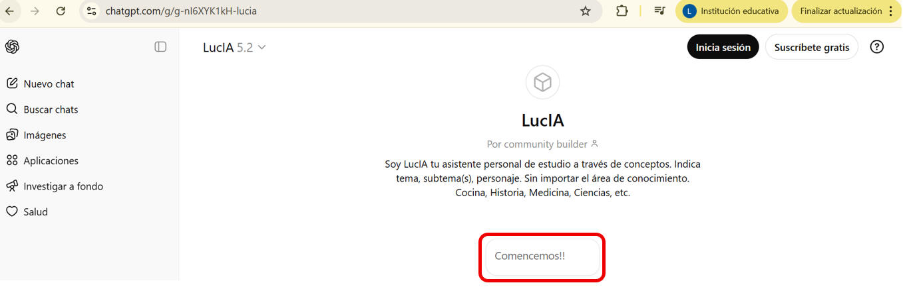

.

Propósito:
-
El propósito de esta actividad es
fortalecer el dominio teórico-práctico de los conceptos
fundamentales de programación en Python —incluyendo condicionales,
ciclos (for, while), listas, cadenas de texto (strings),
diccionarios y manipulación de archivos de texto— mediante la
interacción práctica con
LucIA, un
asistente de estudio basado en ChatGPT.
A través de
la interacción práctica con
LucIA
(agente de IA), los estudiantes lograrán:
-
Dominar
las estructuras de datos y control: Comprender el
funcionamiento, sintaxis y diferencias clave entre
condicionales, ciclos (for,
while),
listas, cadenas de texto (strings), diccionarios y manipulación
de archivos de texto.
-
Aplicar
conocimientos en contextos reales: Utilizar la IA como
herramienta para resolver problemas prácticos y estructurar
datos de manera eficiente.
-
Fomentar el aprendizaje autónomo: Desarrollar
habilidades de autoaprendizaje y evaluación crítica, utilizando
a LucIA como un tutor personalizado para explorar y resolver
dudas sobre temas de interés personal relacionados con la
programación.

Modalidad:

Instrucciones:
.
-
Acceso al Agente Conversacional:
-
Utiliza el enlace
proporcionado para acceder al asistente de estudio en
ChatGPT (LucIA). y haz clic en el botón "Comencemos!!"

-
Definición del Tema y
Contexto:
-
Al iniciar la
conversación, sigue las instrucciones para indicar el
área de conocimiento, el tema
específico y un pasatiempo o personaje
favorito de tu interés. Esto servirá como contexto
para que LucIA genere ejemplos y
ejercicios personalizados sobre los fundamentos de
programación en Python (condicionales, ciclos, listas,
strings, diccionarios y manejo de archivos).

-
Ejemplo de contexto:
Utiliza el siguiente
formato, separado por comas:
-
Área de conocimiento, tema
específico, personaje o pasatiempo favorito
Programación,
fundamentos de Python (condicionales, ciclo while, ciclo for,
listas, cadenas de caracteres (stings), diccionarios y manejo de
archivos de texto), Harry Potter.
Interacción con
el Agente:
-
Estudio: Una vez
establecido el contexto, LucIA te proporcionará ejemplos
prácticos. Analiza detenidamente cada concepto y su
aplicación.
-
Evaluación:
Posteriormente, LucIA te presentará una serie de
preguntas. Responde en el formato indicado, por ejemplo:
1(a), 2(c), 3(d), 4(c), 5(b), 6(a), 7(c)

-
Retroalimentación:
LucIA analizará tus respuestas y te brindará
correcciones. Si aciertas la mayoría, avanzarás a un
desafío final.
-
Iteración y Cierre:Itera
la conversación cuantas veces sea necesario para resolver dudas
y asegurar tu aprendizaje.
-
La actividad finalizará
cuando apruebes el desafío final y recibas la notificación de
"aprobado" por parte de LucIA.

caracteres_validos = "
abcdefghijklmnopqrstuvwxyzñáéíóú0123456789"
En el main, solicitar el nombre del archivo de texto
origen (Poema.txt) y el nombre
del archivo de texto destino (copia.txt).
-
La función
crea_lista_palabras (nombre)
que recibe el nombre del archivo de texto. La función regresa una lista con las
palabras que contiene el archivo de texto.
-
La función
suma_caracteres
(lista) que recibe una lista de palabras y regresa la suma total de
caracteres de todas las palabras contenidas en la lista.
- La función
cuenta_vocales
(lista)
que recibe una lista de palabras y regresa
una tupla con dos valores: el primero
representa la cantidad de palabras que comienzan con una vocal en minúsculas y el segundo representa la cantidad de
palabras que comienzan con una vocal en mayúsculas.
-
La función
diccionario_vocales
(lista)
que recibe una lista de palabras y regresa
un diccionario donde las llaves son las vocales y cada elemento una
lista de las palabras que comienzan con dicha vocal.
-
La función
imprime_diccionario
(diccionario)
que imprime el diccionario como tabla, con
una tabulación entre la clave y la lista.
-
La función
cuenta_espacios_saltos (nombre)
que recibe el nombre del archivo de texto. La función
imprime el conteo de
espacios y saltos de línea que contiene el
archivo de texto.
NOTA: Se
deben contar los espacios y saltos de línea de forma
individual.
Guarda tu archivo como:
A11_Matricula.ipynb

Especificaciones
de entrega:
Formato de entrega:
pdf o
docx
Nombre del entregable:
A11_matricula.pdf (Impresión de pantalla de tus
funciones y main con su ejecución)
Medio de entrega: Se entrega en Canvas en la sección de
Actividad integradora 1
|